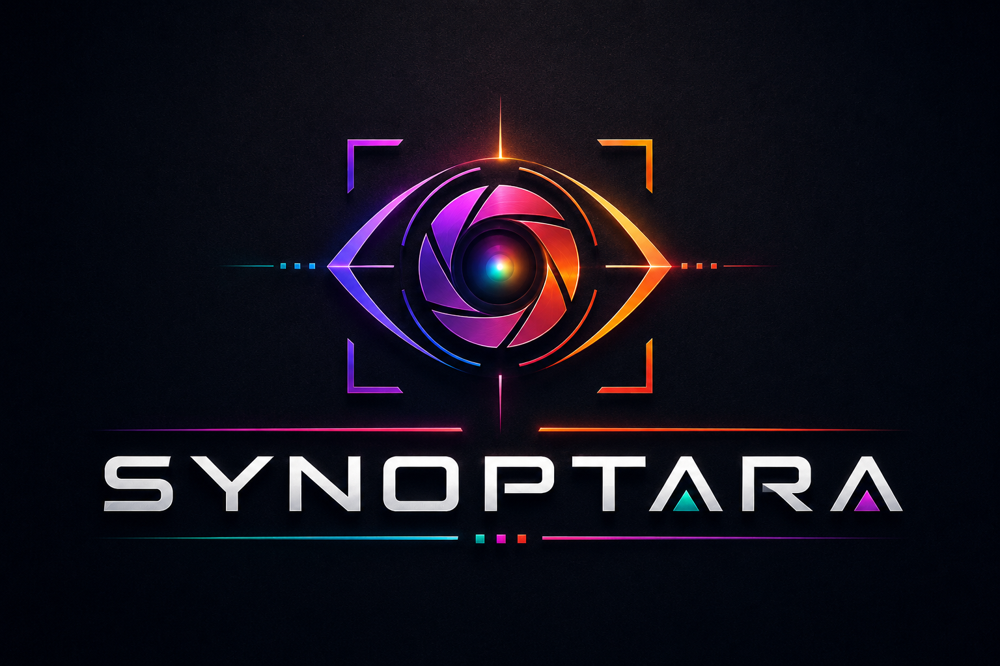

Acquisizione controllata
Parametri camera, sorgenti reali o simulate e condizioni operative vengono associati alla ricetta di produzione.
Piattaforma di visione industriale
SYNOPTARA riunisce acquisizione multi-camera, strumenti di visione, moduli AI e comunicazione con l’impianto in un ambiente operativo coerente.

Come funziona
La modalità automatica può essere impostata dall’HMI o tramite rete. Da quel momento SYNOPTARA attende le immagini, le elabora con gli strumenti configurati nella ricetta e restituisce risultati e dati al sistema macchina attraverso i protocolli disponibili.
Se non appartiene a un gruppo, ogni telecamera riceve le proprie immagini, esegue i propri controlli e produce il proprio risultato indipendentemente dalle altre.
Un gruppo identifica più telecamere nella stessa posizione di controllo, rivolte allo stesso particolare da angolazioni diverse. I loro risultati vengono coordinati per ottenere un unico esito del controllo.
Integrazione rapida
L’integrazione di SYNOPTARA in linea è immediata ed essenziale. Il ciclo operativo richiede pochissimi elementi per essere operativo.
Visione industriale
Le funzioni più ricorrenti sono già organizzate in una piattaforma standard. La configurazione si concentra sul controllo da realizzare, senza ricostruire ogni volta acquisizione, interfaccia, gestione ricette e diagnostica.
Parametri camera, sorgenti reali o simulate e condizioni operative vengono associati alla ricetta di produzione.
Il riferimento viene corretto prima del controllo per compensare variazioni ammissibili di posizione e orientamento.
Punti, linee, bordi, cerchi, archi e contorni alimentano misure confrontabili con nominali e limiti definiti.
Esiti, valori e stati operativi restano leggibili nello stesso ambiente usato per configurazione e collaudo.
Strumenti AI integrati
Modelli e algoritmi convenzionali possono collaborare nello stesso controllo. La scelta dipende dai campioni, dalla variabilità produttiva e dai criteri di accettazione.
Individua componenti, aree e profili complessi, fornendo regioni utilizzabili dai controlli successivi.
Assegna immagini o particolari a categorie definite e supporta la distinzione tra condizioni note.
Affianca l’analisi superficiale quando forme e variabilità rendono insufficiente una regola rigida.
Le aree riconosciute diventano riferimenti geometrici; il valore finale resta calcolato con strumenti deterministici.
L’addestramento (training) può essere eseguito direttamente sulla postazione di lavoro oppure offline su un altro computer.
Gestione multi-camera
Ogni camera può avere parametri, strumenti e responsabilità differenti. I risultati vengono ricondotti alla stessa ricetta e alla conformità complessiva del pezzo.
Le prestazioni effettive dipendono da hardware, risoluzione, strumenti configurati e tempo ciclo richiesto.
Integrazione industriale
SYNOPTARA organizza lo scambio tra acquisizione, logica di controllo e automazione. Le interfacce definitive vengono definite in base all’impianto e ai requisiti di produzione.
Vantaggi concreti
Camere, strumenti, tolleranze e moduli AI sono raccolti per articolo e ricetta.
Una base comune riduce attività ripetitive tra stazioni e progetti con esigenze simili.
Sorgenti simulate e immagini registrate aiutano a preparare il controllo prima della prova in macchina.
Conduzione, supervisione e configurazione possono avere permessi coerenti con le responsabilità.
Stati e risultati aiutano a distinguere un problema di acquisizione da uno di analisi o integrazione.
Nuovi strumenti possono essere inseriti senza riprogettare l’intero flusso operativo.
Architettura del sistema
L’organizzazione a livelli limita gli effetti delle modifiche e mantiene chiaro il percorso che porta dall’immagine al risultato.
Contatti
Descrivi il componente, i difetti da intercettare, il tempo ciclo e le condizioni di acquisizione disponibili. Contattaci anche per richiedere una demo del sistema. La fattibilità si valuta su campioni rappresentativi e criteri di accettazione chiari.